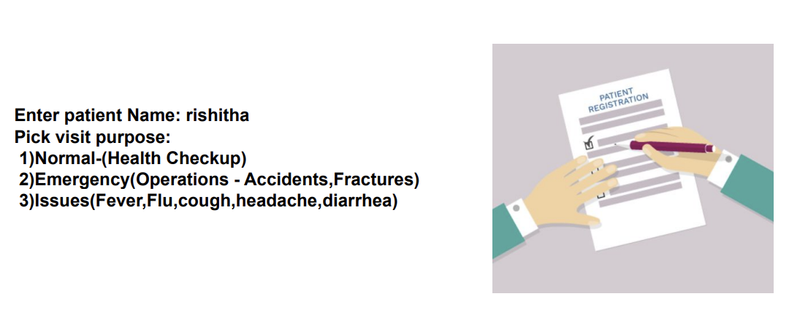
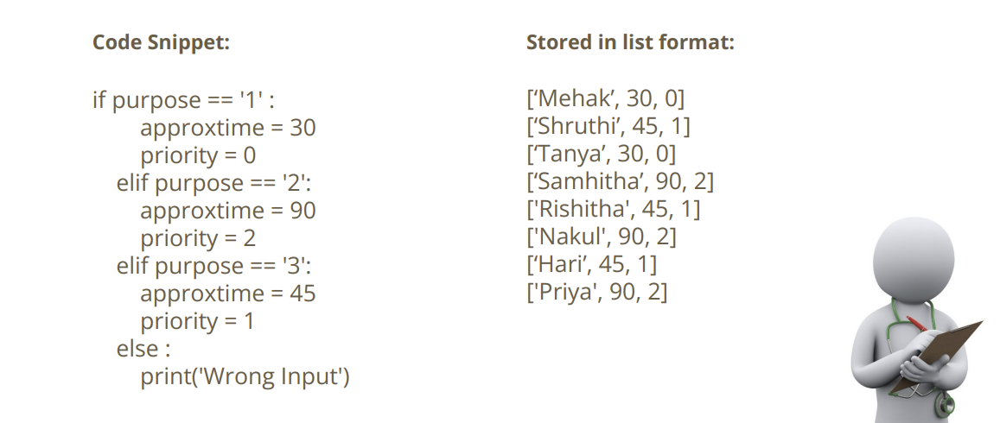
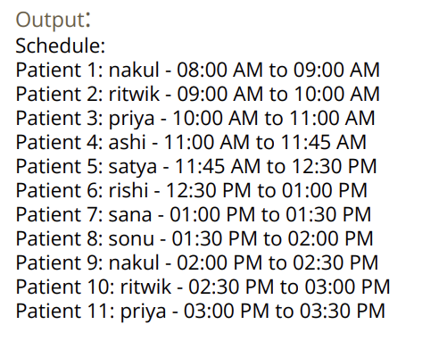
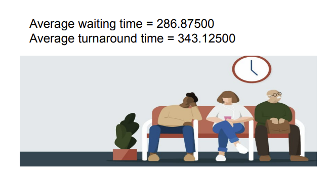

Overview
This project demonstrates a patient scheduling system using data structures and the Round Robin algorithm. It ensures fair and efficient allocation of doctor time, reducing waiting periods and balancing emergency vs. normal visits.
Streamlined Scheduling Algorithms • Python • Data Structures
This project demonstrates a patient scheduling system using data structures and the Round Robin algorithm. It ensures fair and efficient allocation of doctor time, reducing waiting periods and balancing emergency vs. normal visits.



